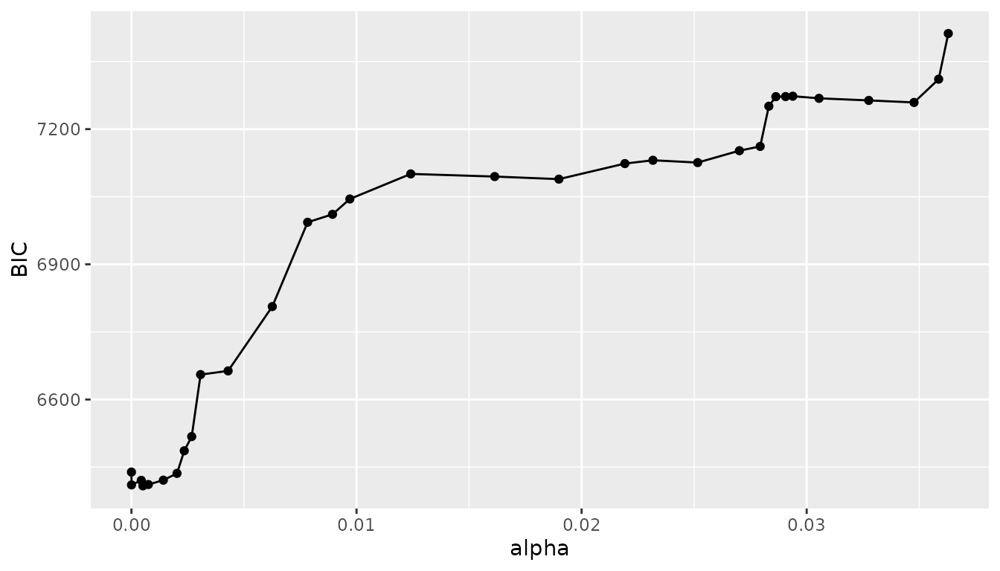

Variable length Markov chains (VLMC)
Source:vignettes/variable-length-markov-chains.Rmd
variable-length-markov-chains.Rmd
library(mixvlmc)
library(geodist) ## used in the earth quake example
library(ggplot2) ## used in the earth quake exampleA Markov chain is a probabilistic model for time series in which the probability of the next state depends only on finite memory of previous states (including the current state). The most common case is the order one Markov chain, in which the memory is limited to the current state.
We consider here only Markov chains with finite state spaces.
Theoretical aspects
High order Markov chains
Let us denote \(X_1, X_2, \ldots, X_n,
\ldots\) a sequence of random variables. It is a (stationary)
Markov chain of order \(m\) is for all
\(n>m\) \[
\begin{multline}
\mathbb{P}(X_n=x_n|X_{n-1}=x_{n-1}, X_{n-2}=x_{n-2}, \ldots,
X_{1}=x_{1})=\\
\mathbb{P}(X_n=x_n|X_{n-1}=x_{n-1}, X_{n-2}=x_{n-2}, \ldots,
X_{n-m}=x_{n-m}).
\end{multline}
\] To specify such a Markov chain of order \(m\), one needs to describe the conditional
distribution on the right hand side of the previous equation for all
values of the past, i.e. for all contexts (see
vignette("context-trees")).
For a state space with \(k\) states,
we need \(k-1\) parameters to specify
completely \[
\mathbb{P}(X_n=x_n|X_{n-1}=x_{n-1}, X_{n-2}=x_{n-2}, \ldots,
X_{n-m}=x_{n-m})
\] for all values of \(x_n\) and
for a single context \((x_{n-m},
\ldots, x_{n-2}, x_{n-1})\).
There are \(k^{m-1}\) such contexts and
thus we need a total of \((k-1)k^{m-1}\) parameters to specify
completely a Markov chain of order \(m\) on a state space with \(k\) states.
Unfortunately, the exponential growth with respect to the order makes high order Markov chain unrealistic on a statistical point of view: the number of parameters to estimate grows too quickly compared to the typical length of a time series.
If we consider a gene as a sequence of (pair of) bases, we have a state space with \(k=4\) states. The mean protein-coding length for humans is roughly 66,000 (pairs of) bases. The following table shows the growth of the parameter number for \(k=4\) with the order of a Markov chain. There are already way too many parameter with \(m=7\) for a proper estimation based on a single gene of an average length. Even the longest genes would be insufficient for \(m=10\).
#> m parameters
#> 1 1 12
#> 2 2 48
#> 3 3 192
#> 4 4 768
#> 5 5 3072
#> 6 6 12288
#> 7 7 49152
#> 8 8 196608
#> 9 9 786432
#> 10 10 3145728Sparse models
While higher order Markov chains would be very useful to capture long memory in time series, the exponential growth of their parameter space is incompatible with this goal. Variable length Markov chains provide a compromise between the controlled number of parameters of low order Markov chains and the long memory of high order ones. The key idea is to consider that the dependency order can depend on the context itself.
Let us consider a simple example with a binary valued time series (\(k=2\)) and a Markov chain of order 3. We need to specify for instance the probability of \(X_n=1\) given the eight possible contexts, from \((0, 0, 0)\) to \((1, 1, 1)\). A possible choice is
#> n-3 n-2 n-1 Probablity
#> 1 0 0 0 0.1
#> 2 1 0 0 0.1
#> 3 0 1 0 0.1
#> 4 1 1 0 0.1
#> 5 0 0 1 0.2
#> 6 1 0 1 0.4
#> 7 0 1 1 0.3
#> 8 1 1 1 0.3In this table, several contexts share the same conditional probability distribution. For instance \[ \mathbb{P}(X_n=1|X_{n-1}=0, X_{n-2}=0,X_{n-3}=0)=\mathbb{P}(X_n=1|X_{n-1}=0, X_{n-2}=1,X_{n-3}=0). \]
In fact, a careful look at the table shows that \[ \begin{align*} \mathbb{P}(X_n=1|X_{n-1}=0, X_{n-2}=a, X_{n-3}=b)&=0.1&\forall a, \forall b,\\ \mathbb{P}(X_n=1|X_{n-1}=1, X_{n-2}=1, X_{n-3}=c)&=0.3&\forall c,\\ \mathbb{P}(X_n=1|X_{n-1}=1, X_{n-2}=0, X_{n-3}=0)&=0.2,&\\ \mathbb{P}(X_n=1|X_{n-1}=1, X_{n-2}=0, X_{n-3}=1)&=0.4, \end{align*} \] and thus the Markov chain can be described by only 4 probability distributions rather than 8. The corresponding contexts are:
- \((0)\) : short memory only when the last state is 0
- \((1, 1)\) : second order memory when the two last states are 1
- \((0, 0, 1)\) and \((1, 0, 1)\) : full third order memory
This third order Markov chain is parsimonious in the sense that it can be described by the four contexts and their associated probability distributions rather than by the full collection needed for an arbitrary third order Markov chain.
Variable length Markov chain
A variable length Markov chain (VLMC) is a sparse high order Markov chain. Let us denote \(X_1, X_2, \ldots, X_n, \ldots\) a sequence of random variables taking values in the finite state space \(S\). The sequence is a VLMC if there is a maximal order \(l_{\max}\) and a function \(l\) from \(S^{l_{\max}}\) to \(\{0,\ldots,l_{\max}\}\) such that for all \(n>l_{\max}\) \[ \begin{multline} \mathbb{P}(X_n=x_n|X_{n-1}=x_{n-1}, X_{n-2}=x_{n-2}, \ldots, X_{1}=x_{1})=\\ \mathbb{P}(X_n=x_n|X_{n-1}=x_{n-1}, X_{n-2}=x_{n-2}, \ldots, X_{n-l(x_{n-l_{\max}}, \ldots, x_{n-1})}=x_{n-l(x_{n-l_{\max}}, \ldots, x_{n-1})}). \end{multline} \] In other words, the memory length (the order) is variable and given by \(l(x_{n-l_{\max}}, \dots, x_{n-1})\).
The memory length function generates a context function \(c\) which keeps in the past the part needed to obtain the conditional distribution: \(c\) is a function from \(S^{l_{\max}}\) to \(\bigcup_{k=0}^{l_{\max}}S^k\) given by: \[ c(x_{n-l_{\max}}, \ldots, x_{n-1})=(x_{l(x_{n-l_{\max}}, \ldots, x_{n-1})}, \ldots, x_{n-1}) \] The image by \(c\) of \(S^{l_{\max}}\) is the set of contexts of the VLMC which is entirely specified by \(l\) and one conditional distribution by unique context.
In the above example, \(l_{\max}=3\) and \(l\) is defined from \(\{0, 1\}^3\) to \(\{0, 1, 2, 3\}\) by \[ \begin{align*} l(a, b, 0)&=1&\forall a, \forall b,\\ l(c, 1, 1)&=2&\forall c,\\ l(0, 0, 1)&=3,&\\ l(1, 0, 1)&=3.&\\ \end{align*} \]
VLMC estimation
If we assume that an observed time series has been generated by a VLMC, we can try and estimate from it the \(l\) function and the corresponding conditional probabilities. This is a non-parametric estimation problem as \(l_{\max}\) is unknown. A natural way to carry on the estimation is to use some form of penalized likelihood approach.
This is done by first extracting from the time series its context
tree (see vignette("context-trees")), a sparse
representation of all the sub-sequences (i.e. contexts) that appear at
least a few times in the time series. Each unique sub-sequence/context
is followed by a state in the time series: this is used to estimate the
conditional probabilities (from frequencies). Finally a pruning
algorithm is applied to balance the complexity of the tree with its
likelihood (given the time series).
VLMC in practice
Estimation
VLMC estimation is provided by the vlmc() function as in
the following example.
set.seed(0)
x <- sample(c(0L, 1L, 2L), 200, replace = TRUE)
model <- vlmc(x)
model
#> VLMC context tree on 0, 1, 2
#> cutoff: 2.996 (quantile: 0.05)
#> Number of contexts: 4
#> Maximum context length: 3The estimation process is controlled by three parameters:
-
max_depth: the largest order/memory considered for the VLMC (defaults to 100). This parameter is essentially a computational burden control parameter and should be increased to a larger value if the final model has contexts that reach the maximum value (this is done automatically intune_vlmc()); -
min_size: the minimum number of occurrences of a context in the time series for it to be included in the context tree during the first phase of the algorithm. The default 2 value is very conservative. Larger values will produce simpler trees; -
alpha/cutoff: this is the main complexity control parameter, which can be expressed in two different scales.cutoffis expressed in the native Kullback-Liebler divergence scale used to assess the difference between conditional probability distributions given different contexts.alphais expressed in a more convenient universal scale based on the quantiles of the Chi-Squared distribution that appears when the pruning criterion is interpreted as a likelihood ratio test (the default isalpha=0.05).
It is recommended to use the default value for min_size,
to increase max_depth only in case of “overflow” (i.e. when
the maximum context length reaches max_depth) and to use
only alpha to control the complexity of the VLMC,
preferably automatically with tune_vlmc(). An important
point to note is that a higher value of alpha
leads to a more complex model as does a lower value of
cutoff.
Based on theoretical results, the order of magnitude of
cutoff should be in \(K \log
n\) (for \(n\) observations),
where \(K\) depends on the type of
convergence analysis conducted. For instance a BIC inspired value for
\(K\) is \((|S|-1)/2\) for a state space \(S\) (of size \(|S|\)). In the above example, we get:
model_theo <- vlmc(x, cutoff = log(length(x)))
model_theo
#> VLMC context tree on 0, 1, 2
#> cutoff: 5.298 (quantile: 0.005)
#> Number of contexts: 1
#> Maximum context length: 0The result is a memory less model, as expected based on the way
x was generated. In this situation, the chosen value of
cutoff leads to the optimal model, but this is not always
the case as this choice is only informed by asymptotic analysis.
Model choice
In practice, it is recommended to start with a conservative value of
cutoff (or alpha) and to use a penalized
criterion to find the best model in a way that balances likelihood and
complexity (see vignette("likelihood") for details on
likelihood calculation for VLMC). A conservative value of
cutoff is a small one, while alpha should be
high to be conservative. A possible choice is to use the BIC inspired
cutoff divided by a fixed value, for instance \(\frac{1}{4}(|S|-1)\log n\).
Once a “large” model has been obtained, two functions can be used to
generate the collection of simpler models that would have been obtained
by using larger values of cutoff. The function
cutoff() returns a list of values (in alpha
scale by default) that are guaranteed to contain all values that can
generate simpler models that the reference one. For instance in the
following code
model_large <- vlmc(x, cutoff = 0.5 * log(length(x)))
model_large
#> VLMC context tree on 0, 1, 2
#> cutoff: 2.649 (quantile: 0.07071)
#> Number of contexts: 6
#> Maximum context length: 3
model_cutoff <- cutoff(model_large, scale = "native")
model_cutoff
#> [1] 3.177898 3.784875we first adjust a “complex” model using `cutoff=`2.65
and find then that 2 other values can be used to build simpler models,
using prune() as follows:
model_medium <- prune(model_large, cutoff = model_cutoff[1])
model_medium
#> VLMC context tree on 0, 1, 2
#> cutoff: 3.178 (quantile: 0.04167)
#> Number of contexts: 4
#> Maximum context length: 3
model_small <- prune(model_large, cutoff = model_cutoff[2])
model_small
#> VLMC context tree on 0, 1, 2
#> cutoff: 3.785 (quantile: 0.02271)
#> Number of contexts: 1
#> Maximum context length: 0The final model model_small is again the memory less
model.
Automatic model choice
The pair cutoff()/prune() can be used to
implement advanced model selection techniques, for instance based on the
quality of the predictions of the model on a hold-out example. For a
more standard use, the tune_vlmc() provides a fully
automated solution, including the choice of conservative values of the
initial cut off and of a large enough max_depth, as
demonstrated below:
model_tune <- tune_vlmc(x)
model_opt <- as_vlmc(model_tune)
model_opt
#> VLMC context tree on 0, 1, 2
#> cutoff: 3.785 (quantile: 0.02271)
#> Number of contexts: 1
#> Maximum context length: 0We obtain directly an optimal model according to the BIC criterion.
Model choice representation
The object returned by tune_vlmc() contains a summary of
the fitting process. Let us consider a realistic example using the
globalearthquake data set included in the package. In this
simple example we extract from the data set the earth quakes that took
place within a 2,000 km radius around the centre
of California.
California_centre <- data.frame(longitude = -119.449444, latitude = 37.166111)
distances <- geodist(globalearthquake[, c("longitude", "latitude")],
California_centre,
measure = "geodesic"
)
California_earth_quakes <- globalearthquake[distances < 2e6, ] ## distances are in metersThen we study this collection at the week level, building a binary sequence of weeks with or without earthquake(s).
California_weeks <- rep(0, max(globalearthquake$nbweeks))
California_weeks[California_earth_quakes$nbweeks] <- 1And finally we adjust automatically a VLMC.
California_weeks_earth_quakes_model <- tune_vlmc(California_weeks, initial = "truncated")
plot(California_weeks_earth_quakes_model)The resulting model remains relatively simple with an interesting increase of the risk of observing an earth quake after 6 weeks after the last one.
draw(as_vlmc(California_weeks_earth_quakes_model))
#> * (0.7988, 0.2012)
#> +-- 0 (0.8166, 0.1834)
#> | +-- 0 (0.8268, 0.1732)
#> | | '-- 0 (0.8332, 0.1668)
#> | | '-- 0 (0.8398, 0.1602)
#> | | '-- 1 (0.7766, 0.2234)
#> | '-- 1 (0.771, 0.229)
#> '-- 1 (0.7281, 0.2719)The tuning process can be summarised using the summary()
function as follows.
summary(California_weeks_earth_quakes_model)
#> VLMC tune results
#>
#> Best VLMC selected by BIC (6408.344) with likelihood function "truncated" (-3182.077)
#> VLMC context tree on 0, 1
#> cutoff: 6.041 (quantile: 0.0005092)
#> Number of contexts: 6
#> Maximum context length: 5
#>
#> Pruning results
#> cutoff alpha depth nb_contexts loglikelihood AIC BIC
#> 2.191676 3.629154e-02 29 152 -3040.206 6384.411 7412.262
#> 2.201782 3.586391e-02 29 139 -3046.470 6370.940 7310.883
#> 2.228217 3.477002e-02 29 132 -3051.316 6366.632 7259.239
#> 2.279152 3.275949e-02 29 132 -3053.566 6371.133 7263.740
#> 2.339072 3.054872e-02 29 132 -3055.875 6375.750 7268.357
#> 2.372521 2.938285e-02 29 132 -3058.245 6380.490 7273.097
#> 2.381973 2.906186e-02 29 131 -3062.226 6386.452 7272.297
#> 2.394852 2.863036e-02 29 130 -3066.502 6393.004 7272.087
#> 2.404277 2.831881e-02 29 127 -3069.036 6392.071 7250.868
#> 2.416055 2.793443e-02 29 116 -3072.629 6377.258 7161.671
#> 2.445039 2.701147e-02 29 114 -3076.648 6381.296 7152.184
#> 2.506516 2.515721e-02 29 110 -3080.985 6381.970 7125.810
#> 2.577905 2.316872e-02 29 110 -3083.533 6387.066 7130.905
#> 2.625968 2.192238e-02 29 108 -3088.617 6393.233 7123.548
#> 2.751151 1.899146e-02 29 103 -3093.269 6392.538 7089.042
#> 2.893754 1.614045e-02 29 103 -3096.132 6398.264 7094.769
#> 3.125676 1.240985e-02 29 103 -3099.057 6404.114 7100.618
#> 3.344228 9.703925e-03 29 95 -3106.293 6402.587 7044.993
#> 3.417970 8.934162e-03 27 90 -3111.183 6402.366 7010.962
#> 3.536173 7.828270e-03 27 87 -3115.488 6404.977 6993.286
#> 3.737381 6.256985e-03 27 63 -3127.105 6380.209 6806.226
#> 4.077262 4.295389e-03 27 45 -3134.606 6359.212 6663.510
#> 4.382147 3.071849e-03 27 43 -3139.254 6364.508 6655.281
#> 4.507405 2.678006e-03 10 26 -3144.971 6341.943 6517.759
#> 4.628051 2.347121e-03 10 21 -3151.114 6344.228 6486.234
#> 4.763629 2.024423e-03 10 14 -3156.689 6341.378 6436.048
#> 5.090995 1.418191e-03 7 11 -3162.313 6346.626 6421.010
#> 5.678601 7.515599e-04 7 8 -3170.633 6357.267 6411.364
#> 6.040782 5.092285e-04 5 6 -3177.886 6367.771 6408.344
#> 6.183282 4.370913e-04 5 6 -3184.021 6380.042 6420.615
#> 10.764714 3.484403e-06 1 2 -3196.481 6396.961 6410.486
#> 26.426030 3.596414e-13 0 1 -3215.076 6432.152 6438.914in addition, a summary data frame is accessible in the
results component of the object. This can be used to build
e.g. custom graphical representation of the model selection process
(rather than using plot.tune_vlmc() or
autoplot.tune_vlmc()). A typical simple ggplot2
representation can made as follows, for instance:
ggplot(California_weeks_earth_quakes_model$results, aes(x = alpha, y = BIC)) +
geom_line() +
geom_point()
Diagnostics
The package provides numerous ways to analyse a VLMC. Basic functions include
-
states()returns the state space of the model; -
depth()returns the length of the longest context in the model; -
context_number()returns the number of contexts in the model.
For instance, the large model obtained above has the following characteristics:
states(model_large)
#> [1] 0 1 2
depth(model_large)
#> [1] 3
context_number(model_large)
#> [1] 6VLMC objects support classical statistical functions such as:
Contexts
The model can be explored in details by drawing its context tree (see
vignette("context-trees") for details) as follows:
draw(model_large)
#> * (0.325, 0.345, 0.33)
#> '-- 1 (0.3043, 0.4203, 0.2754)
#> +-- 1 (0.2069, 0.4828, 0.3103)
#> | '-- 0 (0.2222, 0.7778, 0)
#> '-- 2 (0.3, 0.3, 0.4)
#> '-- 2 (0, 0.375, 0.625)To explore the contexts in a programmatic way, one should rely on the
contexts() function. VLMC contexts have additional
characteristics compared to context trees. In particular, the
contexts() function can report the log likelihood ratio
associated to each context as follows (compare to cutoff()
above):
contexts(model_large, cutoff = "native")
#> context cutoff
#> 1 0, 1, 1 3.4813864
#> 2 1, 1 0.7006631
#> 3 2, 2, 1 2.9008662
#> 4 2, 1 0.8777091
#> 5 1 0.9067789
#> 6 0.0000000Notice that by default contexts() uses the reverse
representation of contexts, but they can be returned in the natural time
sequence using reverse=FALSE, as in
contexts(model_large, cutoff = "quantile", reverse = FALSE, frequency = "detailed")
#> context freq 0 1 2 cutoff
#> 1 0, 1, 1 9 2 7 0 0.03076473
#> 2 1, 1 29 6 14 9 0.49625611
#> 3 2, 2, 1 8 0 3 5 0.05497558
#> 4 2, 1 20 6 6 8 0.41573421
#> 5 1 69 21 29 19 0.40382287
#> 6 200 65 69 66 1.00000000As for context trees, focused analysis of specific contexts can be
done by requesting a ctx_node representation of the context
of interest, for instance via the find_sequence() function,
or with the default result type of contexts()
ctxs <- contexts(model_large)
ctxs
#> Contexts:
#> 0, 1, 1
#> 1, 1
#> 2, 2, 1
#> 2, 1
#> 1
#> Individual contexts can be analysed using a collection of dedicated functions, for instance